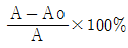
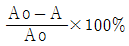
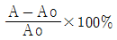
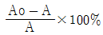

초음파비파괴검사기능사 (2002-01-27 기출문제)
1과목: 초음파탐상시험법
1. 침투탐상시험시 사용되는 건식 현상제의 설명으로 다음 중 맞는 것은?
- 건식현상제는 액체와 함께 사용한다.
- 건식현상제는 덩어리 형태로 적용하여야 한다.
- 건식현상제를 적용하기전에 검사표면은 반드시 건조하여야 한다.
- 건식현상제는 표면이 매끈한 표면에 효과적이다.
(정답률: 47%)

2. 자분탐상시험시 코일의 감은 수가 10회, L/D의 비가 4인 강봉을 코일법으로 검사할 때 요구되는 전류[A]는? (단, L은 봉의 길이, D는 외경임)
- 40A
- 525 A
- 400 A
- 1,125 A
(정답률: 60%)
3. 음향 임피던스란?
- 일반적으로 초음파가 물질내를 진행할 때 물질에 가하는 힘의 크기를 말한다.
- 초음파가 물질내에 진행하는 것을 방해하는 저항을 말한다.
- 매질을 통과하는 음속과 밀도의 차를 말한다.
- 공진값을 정하는데 이용되는 함수이다.
(정답률: 65%)
4. 음향 임피던스(Z)는 밀도(ρ)와 음압(C)의 관계로 나타낼 수 있다. 이 관계를 올바르게 표시한 식은?
- Z = ρ + C
- Z = ρ ÷ C
- Z = ρ - C
- Z = ρ × C
(정답률: 78%)
5. 표면파에 대한 다른 명칭은?
- Lamb 파
- 압축파
- Rayleigh 파
- 전단파
(정답률: 85%)
6. 횡파의 특성에 대한 설명 중 잘못된 것은?
- 파의 진행방향과 입자의 진동방향이 수직이다.
- 속도는 종파의 약 1/2 이다.
- 액체와 기체에는 존재하지 않는다.
- 횡파의 속도는 표면파 속도의 90% 정도이다.
(정답률: 77%)
7. 다음 중에서 종파의 진행속도가 가장 큰 매질은?
- 공기
- 아크릴수지
- 알루미늄
- 철
(정답률: 64%)
8. 초음파탐상시험의 접촉 매질이 반드시 지녀야 할 요건이라 볼수 없는 것은?
- 부식성, 유독성이 없어야 한다.
- 쉽게 적용 및 제거할 수 있어야 한다.
- 탐촉자 내부로 쉽게 흡수될 수 있어야 한다.
- 균질해야 한다.
(정답률: 69%)
9. 탐촉자로 쓰이는 크리스탈의 두께를 결정하는 공식으로 옳은 것은? (단, λ는 파장, f는 진동수)
- λ/2
- f/2
- f/3
- λ/3
(정답률: 71%)
10. 초음파 탐상기에서 단위시간에 탐상기가 발생하는 펄스의 수를 무엇이라 하는가?
- 펄스의 길이
- 펄스 회복시간
- 주파수
- 펄스 반복 주파수
(정답률: 82%)
11. 기본적인 펄스에코 초음파 탐상기에서 탐촉자를 동작시키게 되는 전압 발생의 요소는?
- 증폭기
- 수신기
- 펄서(pulser)
- 동조기
(정답률: 89%)
12. 경사각 탐촉자에 플라스틱 쐐기를 붙이는 근본적인 이유는?
- 시험시 손에 잡기 쉽게 하기 위해서
- 내마모성을 좋게 하기 위해서
- 초음파를 시험체에 경사지게 전달하기 위해서
- 탐촉자를 견고하게 만들기 위해서
(정답률: 65%)
13. 초음파탐상시험에서 수침탐상시 탐촉자와 시편간의 수중 거리로 알맞는 것은?
- 멀수록 좋다.
- 짧을수록 좋다.
- 시편 두께의 두배 이어야 한다.
- 교정시 사용한 거리와 같아야 한다.
(정답률: 53%)
14. 수침법에서 탐촉자가 평평한 입사표면에 대해 수직임을 증명할 수 있는 것은?
- 입사표면으로부터의 최대 반사
- 다중 송신하는 물의 제거
- 적절한 파장
- 초기 펄스의 최대 진폭
(정답률: 95%)
15. 교정된 A 스캔 탐상기 스크린에 시험체의 끝부분을 나타내는 지시는?
- Hash
- 송신 펄스
- 옆면 에코
- 저면 반사
(정답률: 69%)
16. 방사선투과시험시 필름을 현상액에 처음 넣을 때 최소한 얼마 동안 흔들어 주어야 하는가?
- 1분
- 30초
- 10초
- 5분
(정답률: 42%)
17. 초음파탐상시험시 표준시험편으로 장치를 비교하는 과정을 무엇이라 하는가?
- 보정
- 진폭
- 주사
- 진동
(정답률: 72%)
18. 다음 중 표면파의 입자운동은?
- 물결모양
- 원형
- 타원형
- 사각모양
(정답률: 65%)
19. 전몰 수침법에서 물거리는 어느 부분을 나타내는 것인가?
- 시편 표면에서 시편 저면까지의 거리
- 탐촉자면에서 시편 저면까지의 거리
- 탐촉자면에서 시편 표면까지의 거리
- 탐촉자면에서 결함까지의 거리
(정답률: 85%)
20. 펄스반사 초음파탐상시험에서 직접 접촉법과 관계가 없는 것은?
- 수침법
- 표면파법
- 경사각법
- 수직법
(정답률: 73%)
2과목: 초음파탐상관련규격
21. 두께가 두꺼운 강판 용접부에 존재하는 결함검출을 위해 가장 효과적인 초음파탐상 시험방법은?
- 횡파를 이용한 경사각 탐상법
- 종파를 이용한 수직 탐상법
- 판파를 이용한 경사각법
- 표면파를 이용한 수직 탐상법
(정답률: 53%)
22. 초음파가 제1매질과 제2매질의 경계면에서 진행할 때 파형변환과 굴절이 발생한다. 이 때의 제2임계각이란
- 굴절된 종파가 정확히 90° 가 되었을 때
- 굴절된 횡파가 정확히 90° 가 되었을 때
- 제2매질 내에 종파와 횡파가 같이 존재하게 된 때
- 제2매질 내에 종파와 횡파가 존재하지 않을 때
(정답률: 73%)
23. 수직 탐상시험시 발생하는 적산효과는 동일한 진행거리를 가지면서 여러 진행경로를 갖는 음파들의 중복에 의해 결함 에코높이가 점점 높아지는 현상이다. 다음 중 적산효과 영향이 미치지 않는 것은?
- 결함이 시험체 중심에 존재한다.
- 결함이 작다
- 시험체가 얇다.
- 음파 진행거리가 길다.
(정답률: 45%)
24. 경사각 초음파탐상시험시 CRT상에서 결함에코의 시간축 위치가 나타내는 것은?
- 입사점에서 결함까지 빔진행거리
- 결함의 음압 세기
- 입사점에서 결함까지 시험체 표면상 거리
- 표면에서 결함까지 수직거리
(정답률: 57%)
25. 경사각탐상에서 "탐촉자로 부터 나온 초음파빔의 중심축이 저면에서 반사하여 탐상표면에 도달하는 점"이란 무엇인가?
- 스킵점(Skip Point)
- 빔거리(Beam Path Length)
- 1 스킵 거리(1 Skip Length)
- 0.5 스킵 거리(0.5 Skip Length)
(정답률: 43%)
26. KS B ⑤35에서 탐촉자 종류에 따라 필요한 개별성능측정 중 직접 접촉용 1진동자 경사각탐촉자에 대한 측정항목에 해당되지 않는 것은?
- 최대감도
- 입사점
- 굴절각
- 불감대
(정답률: 30%)
27. KS B 0897에 따른 표준시험편과 대비시험편중 경사각 탐촉자의 굴절각 측정과 거리진폭특성 곡선의 작성에 사용되는 것은?
- STB-A1
- RB-A4 AL
- STB-A3
- STB-A31
(정답률: 58%)
28. KS D 0233에 의한 탐상기의 원거리 분해능 측정 방법으로 올바른 것은?
- STB-A1을 사용하고 공칭주파수가 2MHz일 때 15mm이하
- STB-A3을 사용하고 공칭주파수가 5MHz일 때 7mm이하
- RB-RA을 사용하고 공칭주파수가 2MHz일 때 9mm이하
- RB-A6을 사용하고 공칭주파수가 5MHz일 때 10mm이하
(정답률: 54%)
29. KS B 0896의 초음파탐상시 적용되는 시험체의 두께는?
- 1㎜이상
- 3㎜이상
- 4㎜이상
- 6㎜이상
(정답률: 93%)
30. 다음 중 KS B 0817에 의한 초음파탐상 시험결과를 평가하는 항목에 포함되지 않는 것은?
- 흠집의 모양
- 흠집의 지시길이
- 흠집의 넓이
- 흠집의 지시높이
(정답률: 72%)
31. KS B 0896에 의한 강 용접부의 초음파탐상시험시 맞대기이음의 탐상에서 판 두께 40mm 이하의 경우 사용되는 탐촉자의 공칭 굴절각은? (단, 음향이방성을 가진 시험체 제외)
- 70°
- 60°
- 45°
- 35°
(정답률: 69%)
32. KS B 0896 강 용접부의 초음파탐상 시험방법에서 경사각 탐촉자의 공칭주파수와 진동자의 공칭치수(mm)가 서로 틀리게 연결된 것은?
- 2MHz : 20×20
- 5MHz : 25×25
- 2MHz : 14×14
- 5MHz : 10×10
(정답률: 48%)
33. KS B 0817에 의한 탐상도형의 표시에서 기본기호가 서로 틀리게 연결된 것은?
- W : 측면 에코
- F : 흠집 에코
- S : 표면 에코
- A : 송신 펄스
(정답률: 50%)
34. KS B 0897의 알루미늄 맞대기용접부의 초음파 경사각탐상 시험방법에서 탐상기의 사용 조건을 틀리게 설명한 것은?
- 증폭직선성은 측정하여 ± 3%로 한다.
- 시간축의 직선성은 측정하여 ± 1%로 한다.
- 감도 여유값은 측정하여 10dB 이상으로 한다.
- 사용조건의 확인은 장치의 사용 개시시 및 2년마다 확인한다.
(정답률: 69%)
35. KS B 0896에 의한 초음파 탐상장치의 탐상기에 필요한 기능을 설명한 것으로 틀린 것은?
- 탐상기는 1탐촉자법, 2탐촉자법 중 어느 것이나 사용할 수 있는 것으로 한다.
- 탐상기는 적어도 2MHz 및 5MHz의 주파수로 작동하는 것으로 한다.
- 게인 조정기는 1스텝 2dB 이하에서 합계 조정량은 50dB 이상 가진 것으로 한다.
- 게이트 범위는 10∼50mm(횡파)의 범위에서 고정된 설정 값을 가진 것으로 한다.
(정답률: 67%)
36. KS B ⑤35 초음파 탐촉자의 성능 측정 방법에서 보통주파수 5MHz를 사용하며 지름 20mm 수직용 수정진동자로 만들어진 탐촉자의 표시방법으로 옳은 것은?
- N20Q5N
- B20N5Q
- N5Q20N
- B5N20Q
(정답률: 57%)
37. KS B ⑤35에 의한 B5M3x20NID의 설명으로 다음 중 틀린 것은?
- 넓은 주파수 대역폭의 공칭주파수가 5MHz
- 압전자기 일반으로 치수는 3×20(mm)
- 탐촉자의 형식은 수직 탐촉자
- 수침용으로 2진동자 탐촉자
(정답률: 54%)
38. KS B 0831에서 G형 표준시험편의 종류가 STB-G V15-1 이라면 시험편의 입사면-밑면까지의 전체 길이와 표준흠의 치수는?
- 150mm, ø1mm
- 150mm, ø10mm
- 180mm, ø10mm
- 180mm, ø1mm
(정답률: 63%)
39. KS B ⑤35에 의한 초음파 탐촉자의 공통 성능측정 항목에 해당되지 않는 것은?
- 시험 주파수
- 전기 임피던스
- 근거리 분해능
- 진동자 유효 치수
(정답률: 40%)
40. KS B 0896에서 70mm 두께인 맞대기 용접부를 탐상시 에코 높이가 IV영역이고 흠의 지시길이가 18mm인 흠이 발견되었다면 이의 흠 분류는?
- 1류
- 2류
- 3류
- 4류
(정답률: 62%)
3과목: 금속재료일반 및 용접일반
41. KS B ⑤35에 의한 주파수 측정시 3파법을 사용하여야 하는 경우는?
- 최대 피크 전후의 피크 레벨이 최대 피크보다 –10dB 이상일 때
- 최대 피크 전후의 피크 레벨이 최대 피크보다 +10dB 이상일 때
- 최대 피크 전후의 피크 레벨이 최대 피크보다 –12dB 이상일 때
- 최대 피크 전후의 피크 레벨이 +12dB 이하일 때
(정답률: 45%)
42. 동소변태를 옳게 설명한 것은?
- 고체내에서 결정격자의 변화
- 고체내에서 전자격자의 활동
- 액체내에서 결정격자의 변화
- 기체내에서 결정격자의 변화
(정답률: 84%)
43. 소성가공이 아닌 것은?
- 단조
- 인발
- 주조
- 압연
(정답률: 48%)
44. 금속의 소성변형이 일어나는 원인과 관련이 깊은 것은?
- 비중
- 비열
- 경도
- 슬립
(정답률: 67%)
45. 시험편 파괴되기 직전의 단면적을 A, 원단면적을 Ao라 할 때 단면 수축율의 산출공식은?




(정답률: 63%)
46. 금속 시료(試料)의 연마에서 전해 연마(electrolytic polishing)는 어디에 속하는가?
- 쇼트 블라스트
- 중간 연마
- 미세 연마
- 샌드 블라스트
(정답률: 63%)
47. 미세 펄라이트(fine pearlite)라고도 하는 것은?
- 레데브라이트
- 페라이트
- 오스테나이트
- 결절상 투루스타이트
(정답률: 48%)
48. 고속도강(SKH)의 특징을 설명한것 중 옳지 못한 것은?(오류 신고가 접수된 문제입니다. 반드시 정답과 해설을 확인하시기 바랍니다.)
- 열처리에 의해 경화한다.
- 마멸성이 크다.
- 마텐자이트(martensite)는 안정되어 1900℃까지도 고속절삭이 가능하다.
- 열전도도가 나쁘므로 담금질온도에서 적당한 유지시간이 필요하다.
(정답률: 53%)
49. 반도체 기판으로 가장 많이 사용되는 금속은?
- 납
- 구리
- 실리콘
- 철
(정답률: 63%)
50. 600℃ 에서 6 : 4 황동(muntz metal)의 평형상태도 조직은?
- α + β
- β + γ
- β
- α
(정답률: 83%)
51. 강(steel)의 고체 침탄법의 설명 중 옳지 않은 것은?
- 대량생산에 적합하지 않다.
- 균일가열에 의한 균일침탄이 힘들다.
- 침탄층의 조정이 어렵다.
- 코크스가루나 탄산바륨은 사용하지 않는다.
(정답률: 79%)
52. 금속을 냉간 가공하면 결정입자가 미세화 되어 재료가 단단해지는 현상은?
- 가공경화
- 시효경화
- 고용경화
- 석출경화
(정답률: 69%)
53. 금속적 성질과 비금속적 성질을 같이 나타낸 것은?
- 양성금속(metalloid)
- 중금속(heavy metal)
- 연성금속(ductility metal)
- 경금속(light metal)
(정답률: 75%)
54. 다음 원소 중 용접부의 용착금속 내에서 편석되면 가장 해로운 원소는?
- 규소(Si)
- 유황(S)
- 망간(Mn)
- 구리(Cu)
(정답률: 63%)
55. 이산화탄소 아크용접시 용착 금속 내에 생성되는 기공의 발생 원인이 아닌 것은?
- 가스 유량이 부족하다.
- 가스에 공기가 혼입되어 있다.
- 노즐과 모재간의 거리가 너무 짧다.
- 노즐에 스패터가 많이 부착되어 있다.
(정답률: 41%)
56. 용접부의 예열 목적에 대한 설명으로 틀린 것은?
- 수축응력 감소
- 용착금속의 경화 방지
- 수소성분의 이탈 촉진
- 냉각속도의 증가
(정답률: 75%)
57. 다음 중 UNIX에 대한 설명으로 옳지 않는 것은?
- 시분할 시스템이다.
- Bell 연구소에서 개발되었다.
- 멀티태스킹을 지원한다.
- 실시간 시스템이다.
(정답률: 36%)
58. Window 환경에서 공유된 폴더를 사용하기 위한 방법이 올바른 순서로 나열된 것은?
- 네트워크 환경 - 컴퓨터 아이콘 - 공유 폴더 - 암호 입력
- 컴퓨터 아이콘 - 네트워크 환경 - 암호 입력 - 공유 폴더
- 네트워크 환경 - 암호 입력 - 컴퓨터 아이콘 - 공유 폴더
- 네트워크 환경 - 암호 입력 - 컴퓨터 아이콘 - 공유 폴더
(정답률: 28%)
59. Windows 98의 단축키에 대한 설명 중 바르게 연결되지 않은 것은?
- Ctrl + X : 잘라내기
- Ctrl + A : 복사하기
- Ctrl + V : 붙여넣기
- F5 : 새로 고침
(정답률: 32%)
60. HTML에서 ID, 패스워드 등을 입력하기 위해서 사용하는 것은 무엇인가?
- Form
- Table
- Link
- Frame
(정답률: 34%)